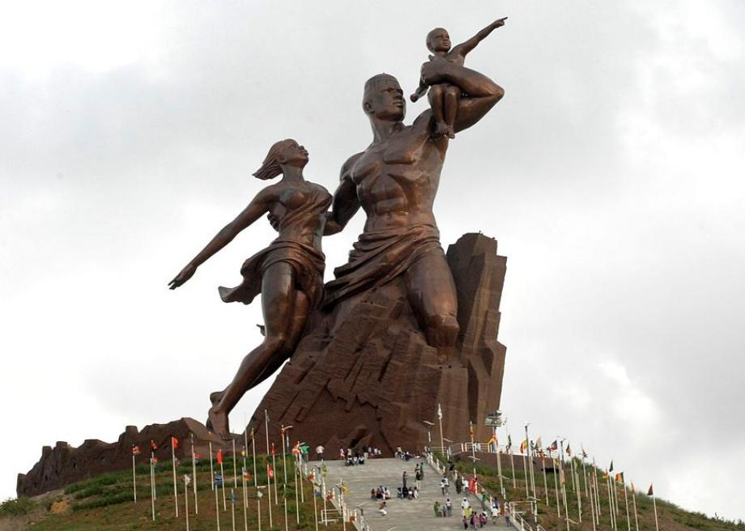

The African Renaissance Monument (French: Le Monument de la Renaissance Africaine) is a 49 meter tall bronze statue located on top of one of the twin hills known as Collines des Mamelles, outside Dakar, Senegal. Built overlooking the Atlantic Ocean in the Ouakam suburb, the statue was designed by the Senegalese architect Pierre Goudiaby
